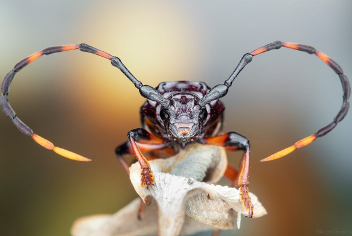

Es un escarabajo perteneciente a la familia Cerambycidae, caracterizado por sus antenas largas y cuerpo robusto. Presenta una coloración llamativa y patrones contrastantes en sus élitros. Sus larvas generalmente se desarrollan en tejidos vegetales y madera, donde se alimentan del material vegetal. Los adultos pueden encontrarse sobre troncos, ramas y vegetación.